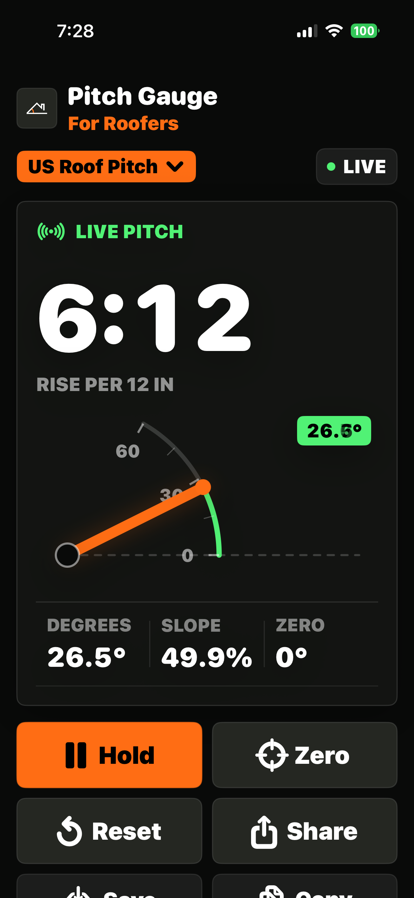
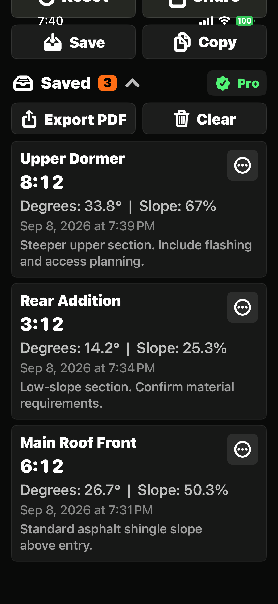
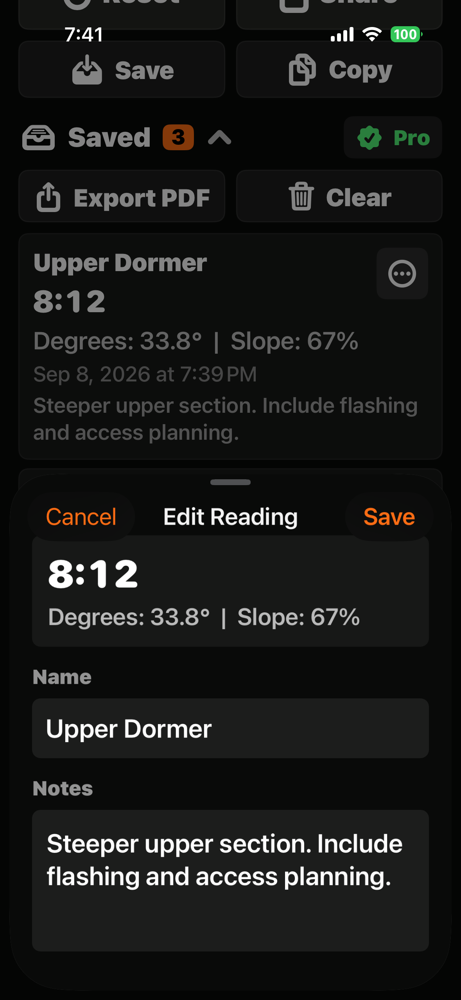

01
Roof-Focused Gauge
A clear 0-60 degree range keeps the gauge focused on real roof pitch work instead of generic level measurements.
Pitch Gauge for Roofers helps roofers, contractors, inspectors, and homeowners check roof slope in the field with a focused gauge built for practical roof measurements.
No account. No ads. Your readings stay on your device.

Place your iPhone on the roof plane, read the pitch, switch units, hold a measurement, zero a baseline, and copy the result without extra clutter.
A clear 0-60 degree range keeps the gauge focused on real roof pitch work instead of generic level measurements.
View readings as x:12 roof pitch, degrees, percent grade, or metric slope so the app fits the way you work.
Freeze a reading, set a baseline when needed, and copy measurements quickly for notes, messages, estimates, or reports.
Save job readings, add context, and keep roof measurements available when you need to reference or share them later.

Keep roof pitch measurements such as main roof, dormer, garage, or rear addition readings ready to reference later.

Use names and notes to make saved readings easier to understand when you return to a job or share details with someone else.
Upgrade once to unlock advanced saving and documentation tools. No recurring subscription.
Keep important roof pitch readings available after the session ends.
Add labels and field notes so each saved reading has useful context.
Create clean summaries you can save, copy, print, or share.
Unlock Pro once. No monthly or annual subscription.
Pitch Gauge for Roofers doesn't require an account and doesn't collect or transmit your roof measurements or saved readings.
Reading information is stored locally on your device, so you can use the tool in the field without handing over your data.
Read our Privacy Policy →